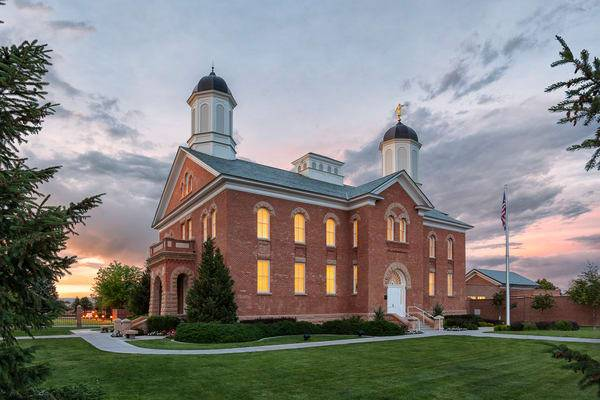

Featured Temple: Vernal, Utah
About:
The Vernal Utah Temple is the fifty-first temple of The Church of Jesus Christ of Latter-day Saints. Located in Vernal it is the tenth LDS temple built in the state of Utah. Upon its dedication November 2, 1997, the Vernal Temple was unique as the only LDS temple built from a previously existing structure.